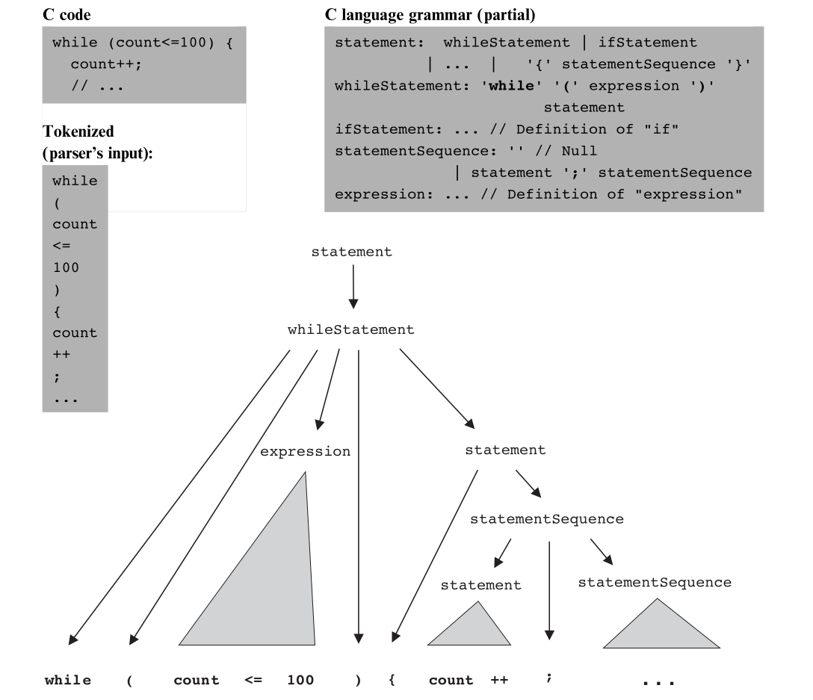

From Tokens to Structure
Grammars, parse trees, and recursive descent.
A Token Stream Is Not Yet a Program
The tokenizer can recognize every token in both sequences. Only one follows the language's structural rules.
let x = x + 1;let = x 1 + ;Parsing determines whether the tokens fit the grammar and identifies the construct formed by each group.
A Grammar Is a Set of Construction Rules
A programming language needs rules that say which token sequences form a valid statement, expression, or program.
Words and symbols that must occur in the program, such as return and ;.
Places filled by another valid construct, such as an expression.
A recipe that combines exact tokens and named parts to form one valid construct.
Build a Return Statement, One Part at a Time
returnStatement: 'return' expression? ';'returnStatementis the name of the construct being described.- The colon means “can be formed as follows.”
'return'and';'are exact tokens that must appear.expression?means an expression may occur here, but it is optional.
return; and return x + 1; have the required form.Three Patterns That Occur in Many Rules
x | yUse either x or y. Example: 'true' | 'false'.
x?Use zero or one x. Example: the expression in return expression? ;.
x*Use zero or more copies of x. Example: a block may contain zero or more statements.
Quoted text denotes an exact token. An unquoted name refers to another rule.
Use the Grammar as a Checklist
returnStatement: 'return' expression? ';'Which sequences match this rule?
return;validreturn x;validreturn xinvalid: missing ;return x y;invalid unless x y forms one expressionA Parse Tree Records How a Rule Was Used
A parse tree is a picture of the nested structure found by the parser. The rule name is at the top; the actual program tokens appear at the bottom.
returnStatement
├── 'return'
├── expression
│ └── term
│ └── x
└── ';'This tree says that return x; is a returnStatement, and that x forms its optional expression.
Next: Read a larger parse tree using the same top-to-bottom idea.
The Same Idea for a Larger Statement

Sketch a Small Parse Tree
letStatement: 'let' identifier '=' expression ';'
expression: term (op term)*
term: identifier | integerConstant
op: '+' | '-'Using the same parent-child style as the previous slide, sketch the tree for let x = y + 2;.
- Begin with
letStatementas the root. - Give it children for
let,x,=,expression, and;. - Now expand the
expressionusing its rule.
term containing y, the token +, and a second term containing 2.Write One Function for One Grammar Rule
We now move from describing valid programs to writing the parser. Start with the return-statement rule we already understand.
returnStatement:
'return' expression? ';'compileReturn():
expect('return')
if current token is not ';':
compileExpression()
expect(';')expect(token) checks that the current token is the expected one and then moves to the next token. Calling another parser function handles a named part such as expression.
How compileWhile() Reads the Tokens
Read a token means: check that the current token is correct, record it, and move to the next token.
while (count < 100) { let count = count + 1; }compileWhile()readswhileand then(.- It calls
compileExpression()forcount < 100. - When that function returns, it reads
)and then{. - It calls
compileStatements(), which callscompileLet(). - After the statements are finished, it reads the closing
}.
The Current Token Usually Decides
let→compileLet()if→compileIf()while→compileWhile()do→compileDo()return→compileReturn()Jack was designed so that the first token usually identifies the alternative. Parsing a term that begins with an identifier requires one-token lookahead.
When Is Lookahead Necessary?
An identifier can begin several kinds of term. What does the next token reveal?
scorevariableitems [array entrydraw (subroutine callScreen .qualified subroutine callA Failed Expectation Reveals the Error
while (x < 10 { let x = x + 1; }After compiling the expression, the grammar requires ). The parser sees { instead.
The same grammar that recognizes valid programs helps identify invalid ones.
Parsing Explains How the Tokens Fit Together
Combines exact tokens and named parts to describe valid constructs.
Records the hierarchical derivation of one program.
Implements each grammar rule as a mutually recursive routine.
Building the Jack Syntax Analyzer
From the Jack grammar to structured XML.
Go to Lecture 30